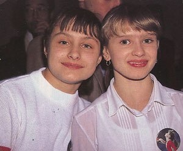

Irina Baraksanova (USSR)
1984 Jr. European AA Champion
|

Irina Baraksanova and
Elena Shushunova (left) at the 1984 Chunichi Cup banquet.
Medal Total
World Championships: 1 Gold
|
Irina was born on July 4, 1969
in Tashkent, Uzbek SSR. She was coached by Valentina Yakovleva at the Army Club in Tashkent and later at the Central Army Sports Club in Moscow by
Viktor Razumovsky.
Competition Results
- 1979
Jr. USSR Championships: 1st AA (candidate for master of sport)
1982
Jr. USSR Championships: 5th AA, 3rd V
SKDA Championships: 2nd Team, 5th AA, 1st FX, 2nd V
1983
USSR Championships: 6th AA, 4th V, 4th FX
- 1984
- Chunichi Cup: 3rd AA, 2nd FX, 3rd V, 3rd UB
- CSSR Spartakiade (Olomouc): 1st Team
- Jr. European Champs.: 1st AA, 1st UB, 2nd V, 2nd FX
- Moscow News: 2nd AA, 1st V, 1st FX
- Tokyo Cup: 2nd UB, 3rd B
- USSR Cup: 6th AA, 1st FX, 2nd V, 3rd B
- USSR Jr. Championships: 1st UB, 2nd FX, 3rd B
- USSR Championship: 3rd AA, 1st FX, 2nd
V, 3rd B
-
- 1985
- Riga Intl: 2nd AA, 1st UB, 2nd B, 4th V
USSR Championships: 1st B, 3rd UB, 4th FX
- USSR Cup: 2nd AA, 1st B
- World Championships (Montreal): 1st Team
- 1986
- American Cup: 3rd AA
- Intl. Mixed Pairs: 1st Team
- USA-USSR Dual Meet: 1st Team, 12th AA
- This page was created on January 17, 1999 and was last
updated on May 16, 2026.
© Gymn Forum
-